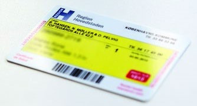
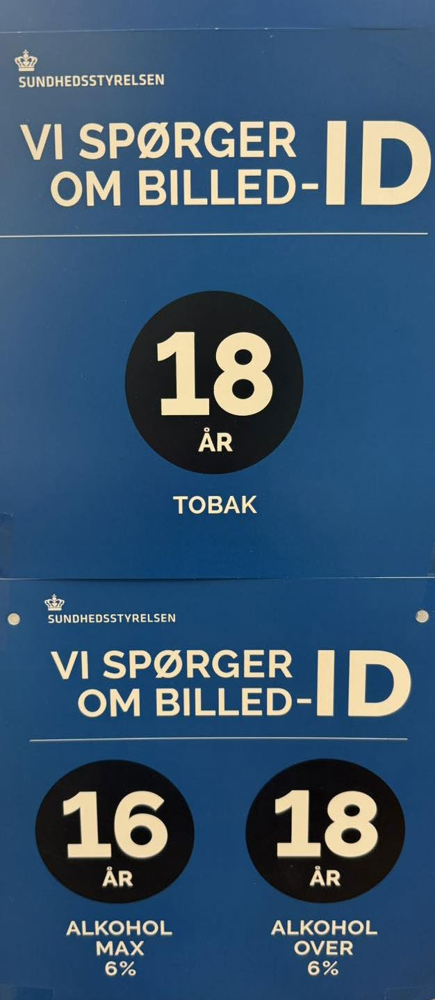

Fakta-ark 9: Sundhed
Áudio
sidde 52
Fakta-ark 9: Sundhed og sygdom
Læremateriale Til Medborgerskabsprøven

sidde 53
Alle borgere kan komme til lægen eller på sygehuset, hvis det er nødvendigt. Langt de fleste behandlinger er gratis, og udgifterne betales via skatterne. Nogle behandlinger skal borgerne dog selv betale en del af, fx tandlægebesøg og besøg hos fysioterapeut. Desuden skal man normalt betale en del af udgifterne til sin medicin.
Læremateriale Til Medborgerskabsprøven Fakta-Ark 9: Sundhed Og Sygdom
Dette fakta-ark handler om: • Sundhedskort, praktiserende læge, medicin og apoteker • Sygehuse • Tandpleje • Børneundersøgelser og vaccinationer • Alkohol og cigaretter
Sundhedskort, Praktiserende Læge, Medicin Og Apoteker
Når en borger bliver registreret i Det Centrale Personregister (CPR) i en kommune, får vedkommende et sundhedskort. Sundhedskortet er et gult plastikkort, og kan også down loades som en app på mobiltelefonen. Kortet er bevis på, at man har ret til behandling i det offentlige sundheds væsen, og skal medbringes, hver gang man er i kontakt med sundhedsvæsenet. Det gælder fx, hvis man skal til lægen eller på sygehuset.
Borgerne kan som udgangspunkt frit vælge hvilken praktiserende læge, de vil have, hvis lægen har åbent for tilgang af nye patienter. Når man bliver syg, er den praktiserende læge normalt den, man først henvender sig til. Man skal ikke betale for at gå til sin praktiserende læge. Lægen kan behandle mange almene helbredsproblemer, ligesom de kan ordinere medicin.
Lægen kan også sende patienten til undersøgelser eller behandling hos fx en speciallæge, en fysioterapeut eller på et sygehus. Man siger, at den praktise rende læge henviser patienten. Man skal dog ikke have en henvisning fra sin læge, hvis man akut skal på sygehuset.
Medicin køber man normalt på et apotek. Noget medicin kan man kun købe, hvis man har fået en recept af sin læge. Det kaldes receptpligtig medicin. Anden medicin kan man købe uden recept. Det kaldes for håndkøbsmedicin.
På apoteket kan man købe alle typer medicin. Receptpligtig medicin kan man kun købe på apoteket, mens håndkøbsmedicin mod fx hovedpine og ondt i halsen også kan købes i nogle supermarkeder og lignende.
sidde 54
Det offentlige yder tilskud* til det meste receptpligtige medicin. Tilskuddet afhænger bl.a. af, hvor meget medicin man køber i løbet af året. Tilskuddet trækkes automatisk fra, når man køber medicinen.
Læremateriale Til Medborgerskabsprøven Fakta-Ark 9: Sundhed Og Sygdom
Sygehuse
Der findes både offentlige og private sygehuse. De offentlige sygehuse bliver drevet af de danske regioner. Det er gratis at blive behandlet på offentlige syge huse.
Man kan blive indlagt på sygehuset, hvis man pludselig får en skade eller en sygdom, og en læge vurderer, at man skal indlægges. Man kan også blive henvist til undersøgelse eller behandling på sygehuset af sin praktiserende læge. En del undersøgelser og behandlinger på sygehuset sker ambulant, dvs. uden at man bliver indlagt, men hvor man skal møde på et af landets mange ambulatorier.
På nogle sygehuse er der også akutmodtagelse. Man kan henvende sig hos akut modtagelsen, hvis man har behov for hurtig lægehjælp, der ikke kræver ambu lance. Det kan fx være, hvis man har brækket en arm eller forstuvet en fod. Det er gratis at blive behandlet hos akutmodtagelsen på de offentlige sygehuse. Man skal ringe til akutmodtagelsen, inden man møder op på sygehuset.
I Danmark har man frit sygehusvalg. Det vil sige, at man normalt selv kan vælge, hvilket offentligt sygehus man vil behandles på. Hvis man vælger et sygehus uden for den region, hvor man bor, kan man dog få afslag, hvis der ikke er plads.
Man kan også blive henvist til et privat sygehus, hvis man skal vente mere end en måned på behandling på et offentligt sygehus. I det tilfælde er behandlingen på et privat sygehus gratis. Man kan tale med sin læge om muligheden for at vælge sygehus. Når man bliver indlagt på et sygehus, kommer man ofte på en stue sammen med to til tre andre patienter. Kvinder og mænd ligger normalt ikke på stue sammen.
Sygehuset sørger for, at patienterne får mad, kommer i bad, får rent tøj på og bliver hjulpet med det, de har brug for. Maden er gratis for patienterne på de offentlige sygehuse. Sygehuset sørger også for, at patienterne har fx sengetøj og håndklæder, så man ikke skal have det med hjemmefra. Dette er også gratis for patienterne på de offentlige sygehuse.
Det er vigtigt, at læge og patient forstår hinanden. Hvis man har behov for tolk, når man skal til lægen eller på sygehuset, har man ret til, at der bliver tilkaldt en tolk. I nogle tilfælde skal man betale et gebyr*, for at der bliver tilkaldt en tolk.
Det er også muligt at besøge fx familiemedlemmer eller venner, når de er indlagt på et sygehus. De fleste sygehuse tilbyder forældre at overnatte, når deres barn er indlagt. Forældre til børn, der er indlagt på sygehuset, må altså gerne være der uden for besøgstiden.
sidde 55
Tandpleje
Læremateriale Til Medborgerskabsprøven Fakta-Ark 9: Sundhed Og Sygdom
Alle børn og unge i Danmark kan få gratis tandpleje til og med 21 år i den kommune, de bor i. En væsentlig del af børnetandplejens arbejde består i at undervise børnene i, hvordan de skal passe på deres tænder.
Voksne fra og med 22 år skal selv finde en privat tandlæge. Man vælger selv, hvilken tandlæge man gerne vil have. Voksne skal selv betale for undersøgelser og behandling hos tandlægen. Det offentlige giver dog et tilskud, som er trukket fra regningen.
Børneundersøgelser Og Vaccinationer
Forældre med et nyfødt barn får lige efter fødslen besøg af en sundhedsple jerske i hjemmet. Sundhedsplejersken kan give råd og vejledning til forældrene om barnet. Det er gratis at få besøg af en sundhedsplejerske.
Fra et barn er fem uger, til det er fem år, kan det desuden få syv forebyggende børneundersøgelser hos lægen. Undersøgelserne foregår efter et bestemt program. Formålet er at følge, hvordan barnet udvikler sig og trives.
Børn kan desuden blive vaccineret mod en række børnesygdomme. Vaccina tionerne er gratis og gives af den praktiserende læge. Børn kan blive vaccineret mod sygdommene difteri, stivkrampe, kighoste, polio, Hib-bakterien, pneu mokok-sygdom, mæslinger, fåresyge, røde hunde og HPV. Hvis man skal have særlige vaccinationer i forbindelse med en rejse til udlandet, skal man selv betale dem.
Alkohol Og Cigaretter
I Danmark er der vedtaget en række love, som skal gøre folk sundere og fore bygge* de såkaldte livsstilssygdomme. Livsstilssygdomme er sygdomme, som hænger sammen med den måde, man lever på, fx at man ryger, drikker eller spiser for fed mad.
Folketinget har bl.a. besluttet, at man skal være mindst 16 år for at kunne købe øl, og at man skal være fyldt 18 år for at købe alkohol over seks procent, det vil sige meget stærk øl, vin og spiritus. Man skal også være 18 år for at kunne købe cigaretter. I nattelivs-zoner skal man også være fyldt 18 år for at købe alkohol efter klokken 22.
Butikkerne kan kræve at se legitimation for at kontrollere, om en person er gammel nok til at købe alkohol og cigaretter.
Der er også vedtaget en rygelov, som betyder, at det er forbudt at ryge indendørs på offentlige* steder: For eksempel i busser, sportshaller og biografer. Det er

sidde 56
også forbudt at ryge på arbejdspladser og skoler og langt de fleste restauranter, caféer, barer og diskoteker.
Læremateriale Til Medborgerskabsprøven Fakta-Ark 9: Sundhed Og Sygdom
Elever på skoler, kostskoler, efterskoler og ungdomsuddannelser (fx gymnasier og erhvervsskoler) har forbud mod at ryge samt anvende tobaksvarer, tobaks surrogater, urtebaserede rygeprodukter eller elektroniske cigaretter med eller uden nikotin i skoletiden (også uden for skolens område). Derudover skal tobak svarer, tobakssurrogater, urtebaserede rygeprodukter og elektroniske cigaretter og genopfyldningsbeholdere med og uden nikotin som udgangspunkt gemmes væk i butikkerne, så de ikke kan ses af kunderne. Varer, der er beregnet til at blive benyttet med disse varer, er også omfattet af forbuddet.
Fonte: Læremateriale til Medborgerskabsprøven, SIRI.